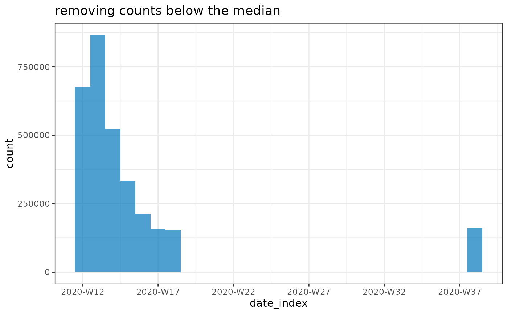

Low counts may be genuine, but they can also reflect actually missing data or strong under-reporting. This function aims to detect the latter by flagging any count below a certain threshold, expressed as a fraction of the median count. Setting low values to NAs can be useful to help fitting temporal trends to the data, as zeros / low counts can throw off some models (e.g. Negative Binomial GLMs).
Arguments
- x
An incidence2::incidence object.
- counts
A tidyselect compliant indication of the counts to be used.
- threshold
A numeric multiplier of the median count to be used as threshold. Defaults to 0.001, in which case any count strictly lower than 0.1% of the mean count is flagged as low count.
- set_missing
A
logicalindicating if the low counts identified should be replaced with NAs (TRUE, default). IfFALSE, new logical columns with theflag_lowsuffix will be added, indicating which entries are below the threshold.
Value
An incidence2::incidence object.
Examples
if (requireNamespace("outbreaks", quietly = TRUE) &&
requireNamespace("incidence2", quietly = TRUE)) {
data(covid19_england_nhscalls_2020, package = "outbreaks")
dat <- covid19_england_nhscalls_2020
i <- incidence(dat, "date", interval = "isoweek", counts = "count")
plot(i)
plot(flag_low_counts(i, threshold = 0.1))
plot(flag_low_counts(i, threshold = 1), title = "removing counts below the median")
}
#> Warning: Removed 19 rows containing missing values or values outside the scale range
#> (`geom_col()`).
